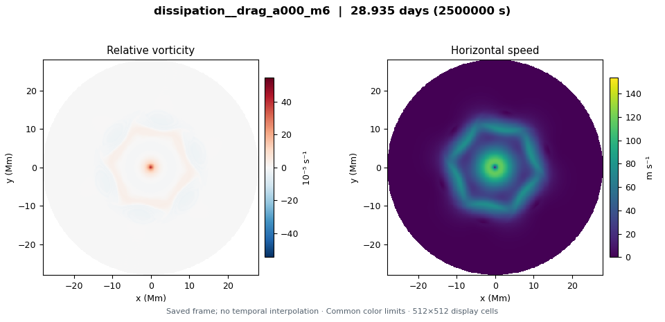
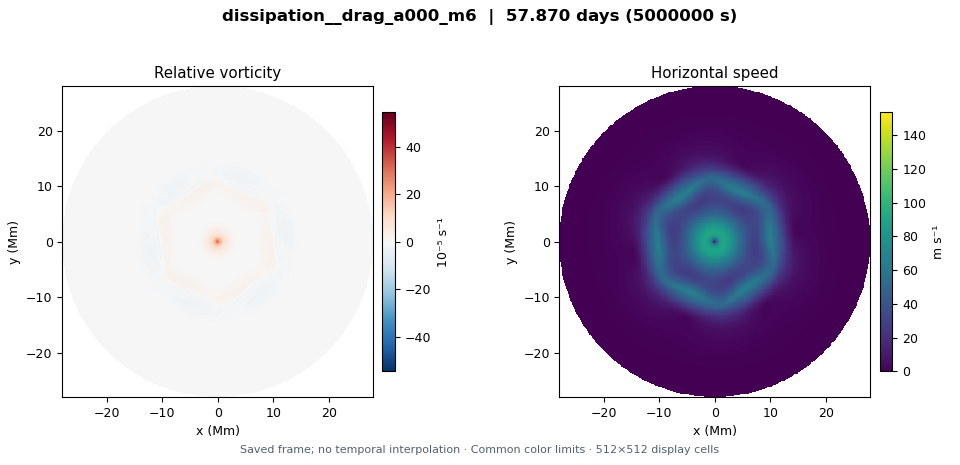
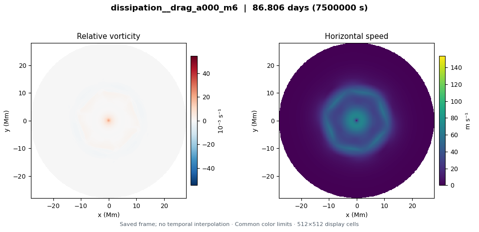
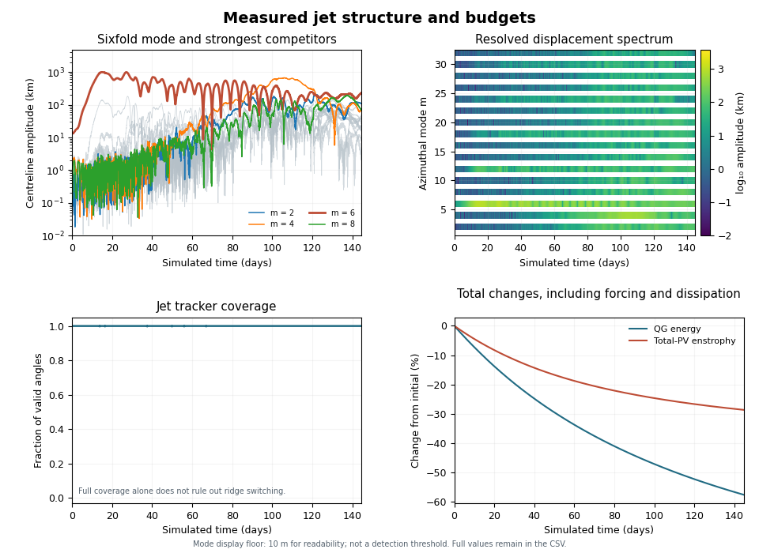

0.00 Earth days
28.94 Earth days

57.87 Earth days

86.81 Earth days

115.74 Earth days
144.68 Earth days

Diagnostics over the complete integration

All 6,251 diagnostic times are included. Full diagnostic CSV files remain private. A tracked Fourier mode alone does not establish a coherent, stable hexagon. The QG energy change includes damping and, for thermal relaxation with a prescribed deep jet, possible target work.
Configuration · Provenance